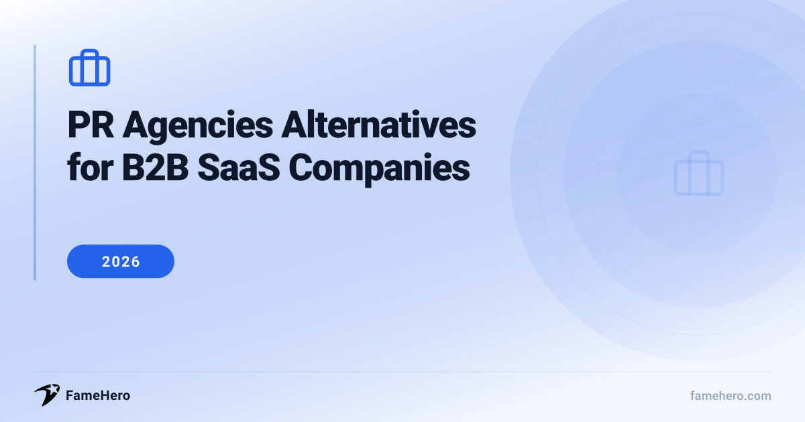

PR Agencies Alternatives for B2B SaaS Companies in 2026 (Revenue-Focused Strategies)

PR Agencies Alternatives for B2B SaaS Companies
B2B SaaS companies often face challenges with traditional PR agencies, including prohibitive costs, rigid long-term contracts, and delayed outcomes. Many agencies also struggle to grasp the specific nuances of the B2B SaaS sector, resulting in a misalignment with company objectives.
When exploring alternatives, look for flexible pricing, such as month-to-month options, and providers with demonstrated expertise in B2B SaaS. A strong track record and the ability to show measurable results tailored to your business needs are essential factors in selecting the right partner.
Try guaranteed press coverage — from $49
No retainers, no commitments. Run a free brand scan to see your visibility score.
PR Agencies Alternatives for B2B SaaS Companies (2026)
FameHero
famehero.comBudgetStartups and small to medium-sized B2B SaaS companiesStarting at $49 per placementFameHero positions itself as a visibility platform rather than a traditional PR agency, offering a modern alternative to the often opaque and retainer-based models of conventional PR. It focuses on guaranteed media placements, aiming to build credibility and brand awareness through professionally written articles published on trusted online publications. FameHero leverages AI for brand analysis to identify visibility strengths, weaknesses, and opportunities, guiding content creation and strategic placement.
StrengthsGuaranteed media placements, AI-driven analysis, transparent per-placement pricingBest forB2B SaaS companies seeking accessible entry points for media placements and initial credibility building.Not ideal forCompanies seeking a comprehensive, full-service PR strategy with ongoing strategic counsel and relationship management, or those who need an agency to embed compliance, creative, and policy review under one roof.MADX Digital
madxdigital.comMid-marketCompanies looking for integrated PR and SEO strategiesContact for pricingMADX Digital is a SaaS-first agency that integrates Public Relations with Search Engine Optimization (SEO) to drive authority and revenue for B2B SaaS companies. They focus on measurable outcomes that directly impact SaaS positioning and revenue, providing reporting that connects PR coverage to tangible business impact.
StrengthsIntegrated PR and SEO, revenue-driven growth focus, measurable business impact reportingBest forCompanies looking for integrated PR and SEO strategies that directly impact revenue and SaaS positioning.Not ideal forCompanies looking for PR solely as a brand awareness play without a strong emphasis on SEO integration and measurable revenue impact.Skale
skale.ioMid-marketB2B SaaS companies focused on SEO as a core revenue channelContact for pricingSkale focuses on revenue-driven organic growth for B2B SaaS companies, specifically integrating PR with SEO to capture high-intent demand. Their programs are designed to transform PR into a predictable source of pipeline, emphasizing SEO as a core revenue channel.
StrengthsRevenue-driven organic growth, PR integrated with SEO, predictable pipeline generationBest forB2B SaaS companies that prioritize SEO as a primary revenue channel and seek predictable pipeline generation from their PR investments.Not ideal forCompanies not focused on SEO as a core revenue channel or those seeking traditional media relations without an organic growth component.PANBlast
panblast.comPremiumCompanies in niche B2B markets with unique data or insightsContact for pricingPANBlast, a division of PAN, specializes in modern PR for emerging and high-growth B2B SaaS and AI technology brands. With over 20 years of experience, they understand the unique challenges of scaling SaaS businesses and deliver outcomes-focused PR programs designed to drive business impact. They emphasize a "true team extension" model, working seamlessly with internal teams.
StrengthsSpecialized B2B SaaS and AI focus, data-led approach, team extension modelBest forCompanies in niche B2B markets with unique data or insights to leverage for compelling PR campaigns.Not ideal forCompanies that do not have unique data or insights to leverage for their PR campaigns.Crackle PR
cracklepr.comPremiumVC-backed software companiesContact for pricingCrackle PR is a B2B SaaS PR firm that focuses on creating strategic narratives for VC-backed software companies. They understand the evolving landscape where buyers research extensively through AI and aim to reach them by building narratives that resonate with enterprise buyers, positioning executives as category leaders, and generating trusted earned media.
StrengthsStrategic narratives for enterprise buyers, AI discoverability, category leadership positioning, deep vertical expertiseBest forVC-backed software companies, particularly those in cybersecurity, fintech, HR tech, and martech.Not ideal forCompanies seeking a broad, non-specialized PR approach, or those not focused on building category leadership and executive thought leadership.Influize
influize.comMid-marketSaaS businesses across various sectorsContact for pricingInfluize offers a range of SaaS PR services designed to build category leadership and shape market conversations. They go beyond mere media mentions by integrating earned media with user-generated content (UGC) campaigns, micro-influencer collaborations, and thought leadership placements.
StrengthsIntegrated earned media with UGC and influencer campaigns, category leadership, PR link building, international PRBest forSaaS businesses across various sectors including CRM, Project Management, Marketing Automation, Cloud Storage, Financial Management, HR Management, E-commerce, and Cybersecurity.Not ideal forCompanies looking for a purely traditional media relations approach without an emphasis on social proof, UGC, or integrated digital strategies.BLASTmedia
blastmedia.comPremiumB2B SaaS companiesContact for pricingBLASTmedia is a PR agency exclusively dedicated to B2B SaaS companies. They focus on using media coverage and thought leadership campaigns to influence key stakeholders, including investors, employees, partners, and customers. They guarantee media placements, aiming to provide predictable and tangible results.
StrengthsExclusive B2B SaaS focus, guaranteed media placements, influence on key stakeholdersBest forB2B SaaS companies seeking specialized PR support.Not ideal forCompanies outside the B2B SaaS sector, or those seeking a broader range of PR services not specific to SaaS growth.PRLab
prlab.coMid-marketCompanies seeking a consistent, long-term PR presenceContact for pricingPRLab positions itself as a strategic communications partner for SaaS companies, blending structured messaging with sustained media outreach to create a consistent visibility engine. They help brands clarify their story and earn media attention in competitive markets, with experience in scaling PR across multiple markets.
StrengthsStrategic communications, sustained visibility engine, scaling PR across markets, structured messagingBest forCompanies seeking a consistent, long-term PR presence and strategic communication for scaling across markets.Not ideal forCompanies looking for quick, one-off campaign bursts rather than a consistent, long-term PR presence.
PR agencies Alternatives for B2B SaaS Companies (2026)
| Alternative | Website | Replaces | Price Range | Best For |
|---|---|---|---|---|
| FameHero | famehero.com | Traditional press release distribution and basic media outreach for initial credibility. | Starting at $49 per placement | B2B SaaS companies seeking accessible entry points for media placements and initial credibility building. |
| MADX Digital | madxdigital.com | PR focused solely on brand awareness without direct revenue impact. | Contact for pricing | Companies looking for integrated PR and SEO strategies that directly impact revenue and SaaS positioning. |
| Skale | skale.io | Traditional media relations without an organic growth component. | Contact for pricing | B2B SaaS companies that prioritize SEO as a primary revenue channel and seek predictable pipeline generation from their PR investments. |
| PANBlast | panblast.com | Generic PR campaigns lacking specialized focus or data-driven insights. | Contact for pricing | Companies in niche B2B markets with unique data or insights to leverage for compelling PR campaigns. |
| Crackle PR | cracklepr.com | Broad, non-specialized PR approaches or PR not focused on category and thought leadership. | Contact for pricing | VC-backed software companies, particularly those in cybersecurity, fintech, HR tech, and martech. |
| Influize | influize.com | Purely traditional media relations without an emphasis on social proof, UGC, or integrated digital strategies. | Contact for pricing | SaaS businesses across various sectors including CRM, Project Management, Marketing Automation, Cloud Storage, Financial Management, HR Management, E-commerce, and Cybersecurity. |
| BLASTmedia | blastmedia.com | PR services not specific to SaaS growth or outside the B2B SaaS sector. | Contact for pricing | B2B SaaS companies seeking specialized PR support. |
| PRLab | prlab.co | Quick, one-off campaign bursts rather than a consistent, long-term PR presence. | Contact for pricing | Companies seeking a consistent, long-term PR presence and strategic communication for scaling across markets. |
Tips for Switching PR Providers
- Evaluate Fit: Prioritize providers with proven B2B SaaS experience. Look for case studies and client testimonials specific to your niche.
- Contract Scrutiny: Clearly define deliverables, reporting frequency, and termination clauses. Ensure alignment with your B2B SaaS marketing goals.
- Measure Early: Establish baseline metrics before switching. Track key performance indicators (KPIs) like website traffic, lead generation, and media mentions from day one.
- Timeline Realism: Understand that building momentum in B2B SaaS PR takes time. Expect initial results within 3-6 months, with significant impact over 6-12 months.
- Avoid Pitfalls: Don't switch solely on price. Ensure clear communication channels and a provider who understands your product's value proposition.
Common PR Mistakes for B2B SaaS Companies
- Failing to articulate a cohesive narrative about the company's offerings can confuse potential customers and make it difficult to stand out in a crowded market.
- Making claims about product capabilities that cannot be met erodes trust and damages brand reputation.
- Neglecting customer sentiment expressed in reviews and on social media can lead to missed opportunities for engagement and problem-solving, potentially escalating into a PR crisis.
- PR efforts that are not integrated with sales and marketing teams can lead to disjointed strategies and missed opportunities for lead generation and revenue impact.
- Measuring success by impressions or ad-value equivalency, rather than tangible business outcomes like leads or revenue, provides a false sense of progress.
- Engaging in a series of uncoordinated PR activities without a clear overarching strategy can lead to wasted effort and a lack of measurable results.
FAQs: Switching PR Strategies for B2B SaaS
Related Comparisons
PR Agencies Alternatives for Management Consulting Firms in 2026 (Beyond Traditional PR)
Management Consulting Firms
PR Agencies Alternatives for Consulting Firms in 2026 (Predictable Outcomes)
Consulting Firms
PR Agencies Alternatives for Logistics Companies in 2026 (Specialized Solutions)
Logistics Companies